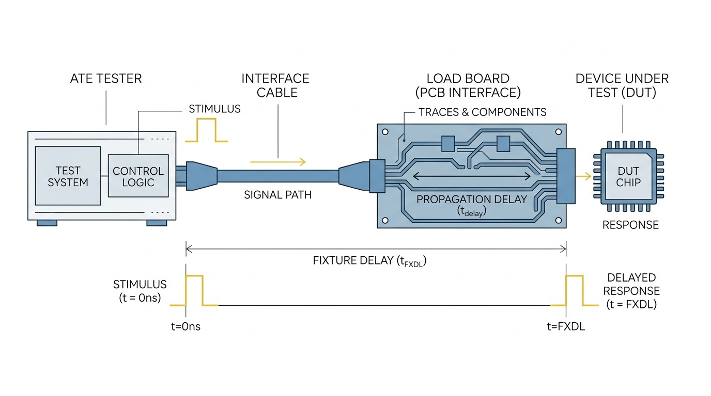

Theory What is Fixture Delay?
A fixture delay (tfixture) is the time required for test signals to travel from the tester's pogo pins to the Device Under Test (DUT) through the Device Interface Board (DIB).
This physical distance creates a time lag that, if ignored, severely impacts the accuracy of measurements. Modern testers, such as the Advantest V93K, measure tfixture via TDR and store it per-pin in SmarTest channel attributes (ch_attributes) so the test program can compensate automatically.

Causes & Measurement Impacts
Various physical and environmental factors introduce delays, wreaking havoc on high-frequency and strict-timing test requirements.
Primary Causes
- Cable Length & Type: Longer cables increase propagation time. Coaxial vs. ribbon cables have different propagation characteristics.
- Connectors & Switching Matrices: Multiplexers routing signals and physical connectors add resistance, capacitance, and path time.
- Test Fixture Design: Built-in relays, attenuators, or impedance matching networks inside the path.
- Environmental: Interconnect parasitics and temperature variations altering electrical characteristics.
Impact on Measurements
- Timing Inaccuracy & Errors: Critical failures in high-frequency testing and strict timing requirement tests affecting yield.
- Phase and Frequency Shifts: Crucial RF testing is degraded by phase shifts and frequency deviations.
- Impedance Mismatches & Distortion: Leads to signal reflections, degraded accuracy, and distorted rise/fall times.
- Timing Skew: Synchronization issues between different channels, making multi-channel correlation challenging.
Interactive Step 1 The PPMU Single-Pin Setup
How does the tester measure delay without a loopback cable? It uses Time Domain Reflectometry (TDR) through the Per-Pin Measurement Unit (PPMU). Because the Force (Drive) and Sense (Measure) circuits share the exact same transmission wire, a driven pulse will bounce off an open boundary and reflect back to the Sense circuit.
Scroll horizontally to view full diagram
Idle
Press "Fire Pulse" to see how the Force and Sense circuits utilize the same wire.
Interactive Step 2 The Mathematics of Calibration
To isolate tfixture, the tester takes two round-trip measurements: tp (round-trip to the pogo pin) and ts (round-trip to the empty DUT socket).
Scroll horizontally to view full diagram
Run Measurements
Calculation Dashboard
Stored per-pin in SmarTest channel attributes (ch_attributes).
Application V93K Timing Advance & tfixture Compensation
Once tfixture is measured, the ATE applies it so programmed timing aligns at the DUT pin rather than at the pogo pins.
Timing Reference (t = 0 ns)
Timing can be referred to the pogo pins (without fixture compensation) or the DUT socket (with compensation). The V93000 calibrates the internal path to the pogo pin; when tfixture is loaded from ch_attributes, the DUT pin becomes the timing reference.
Timing Advance
Because of the physical delay between pogo pins and the DUT socket, the ATE generates drive signals in advance of the programmed transition by tfixture, so the edge arrives at the DUT exactly on time.
Driver / Receiver Compensation
The same tfixture is applied to the internal driver (earlier) and receiver (later). The net timing offset between driver and receiver equals 2 × tfixture. Example: tfixture = 1.85 ns → Δt ≈ 3.7 ns.
References
- Walther, S. & Hu, Y. — Solving MIPI D-PHY Transmitter Test Challenges (Advantest V93000) — fixture delay calibration sections. Local copy: download PDF
- Advantest — V93000 Online Documentation (TDR / fixture delay calibration)